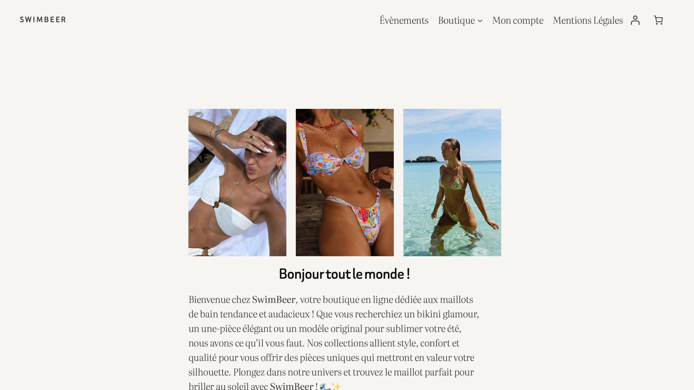
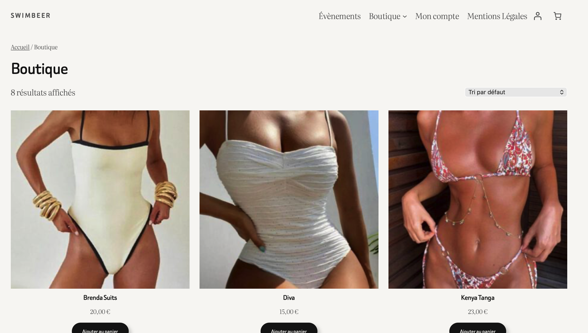
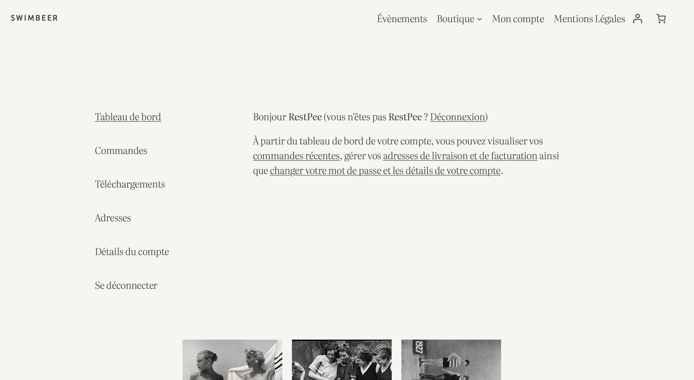

SwimBeer — E-commerce
Création d'une boutique en ligne de maillots de bain — Camp de formation
📋 Contexte du projet
Dans le cadre d'un camp de formation intensif (BTS SIO SLAM), j'ai réalisé la création d'une boutique en ligne fictive nommée SwimBeer, dédiée à la vente de maillots de bain tendance et audacieux.
L'objectif de ce projet était de concevoir et développer un site e-commerce complet avec une interface soignée, une navigation intuitive et une présentation attractive des produits. Ce projet a été réalisé dans un temps limité, simulant les conditions d'un projet professionnel réel.
🎯 Mission et réalisations
- Conception de la charte graphique et de l'identité visuelle de SwimBeer
- Développement de la page d'accueil avec présentation de la boutique
- Création de la galerie produits avec mise en page responsive
- Intégration des éléments de navigation (menu, catégories, panier)
- Optimisation de l'interface pour une expérience utilisateur fluide
💡 Compétences développées
Développer la présence en ligne de l'organisation
J'ai créé une boutique en ligne complète avec une identité visuelle forte. Le site SwimBeer permet à une marque fictive d'avoir une présence web professionnelle et attractive.
Travailler en mode projet
Réalisé sous contrainte de temps lors du camp de formation, ce projet m'a appris à prioriser les fonctionnalités, à gérer mon temps efficacement et à livrer un résultat fonctionnel dans les délais impartis.
🛠️ Technologies utilisées
Front-end
Outils
⚠️ Difficultés rencontrées
Contrainte de temps
Problème : Réaliser un site e-commerce complet et soigné dans le cadre d'un camp de formation intensif avec un délai très court.
Solution : J'ai priorisé les fonctionnalités essentielles, commencé par la structure HTML puis le CSS, et utilisé des techniques CSS modernes (flexbox, grid) pour aller plus vite sur la mise en page.
✅ Résultats et bilan
Ce projet de formation intensive m'a permis de consolider mes compétences en développement front-end dans un contexte de contrainte de temps. J'ai livré un site e-commerce fonctionnel avec une identité visuelle cohérente et une navigation claire.
Ce que j'ai appris : La gestion du stress et des priorités dans un projet sous contrainte, ainsi que l'importance de partir d'une structure solide avant de soigner les détails visuels.
📸 Aperçu du projet


